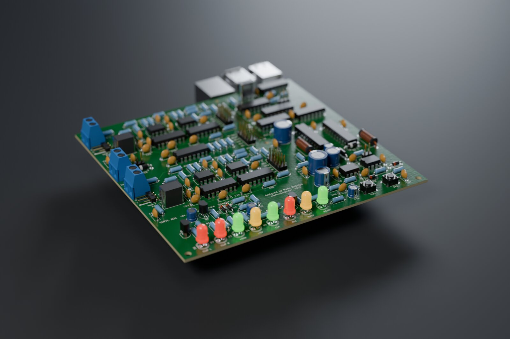
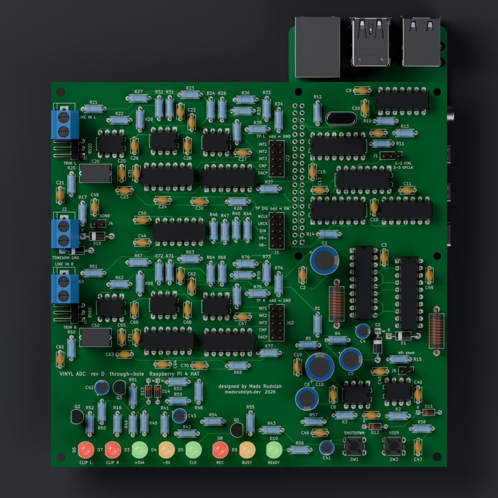
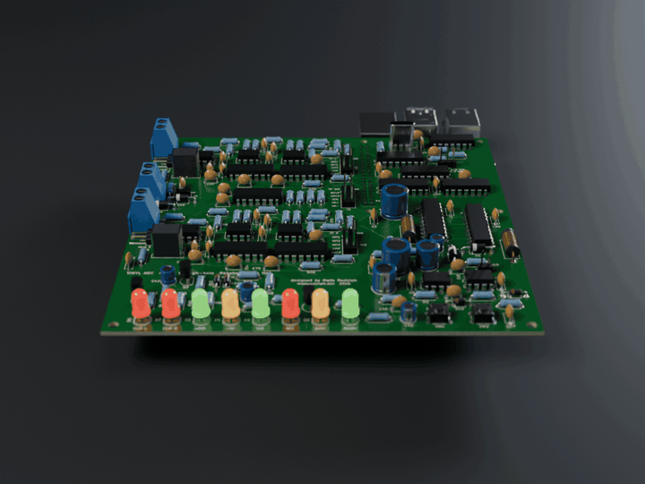

REV D · 20 OCTOBER 2026 · BOARDS SPONSORED BY PCBWAY
From four milled boards to one four-layer HAT.
Every Vinyl ADC board before this one was isolation-milled, single-sided, at the university workshop. PCBWay offered to make the boards, so the converter was redrawn as what it should have been from the start: one board, a solid ground plane, and the Raspberry Pi plugged in underneath.

What changed
| Milled stack (Sept 2026) | Rev D by PCBWay (Oct 2026) | |
|---|---|---|
| Boards | 4 × 100 × 100 mm on a 16-pin bus | 1 × 140 × 136 mm Raspberry Pi HAT |
| Copper | 1 layer, milled, bare | 4 layers: signals, solid GND, split +5V/+5VA, signals |
| Links | dozens of hand-soldered wire jumpers | none: plated through-holes and vias |
| Finish | none | solder mask both sides, silkscreen, HASL lead-free |
| Power for best figures | bench supply; the Pi's 5 V cost 6–11 dB | the Pi's 5 V, analog island behind its own choke |
| Bring-up | two days, two hidden faults in one channel | both channels healthy from the first capture |
Measured: milled against fabricated
The same measurement on both builds: stylus up, platter stopped, the same turntable and phono stage, the levels set so music peaks at about −6 dBFS, ten seconds of the ripper's own 48 kHz output. Left / right.
| 20 Hz–20 kHz | Milled stack · bench supply · crystal clock | Rev D · Pi 5 V · Pi clock |
|---|---|---|
| Idle floor, A-weighted | −61.1 / −62.1 dBFS | −69.7 / −68.2 dBFS |
| Idle floor, 200 Hz–2 kHz | −68.6 / −69.4 dBFS | −73.7 / −73.6 dBFS |
| Idle floor, 2–20 kHz | −59.6 / −60.6 dBFS | −76.5 / −70.5 dBFS |
| Music peak to floor, A-weighted | 54.2 / 55.2 dB | 63.7 / 62.2 dB |
| Music peak to floor, unweighted | 48.9 / 49.2 dB | 51.4 / 51.3 dB |
Rev D was measured on the Raspberry Pi's supply, which cost the milled stack the most, and on the Pi's fractional-divider clock (about 1 ns of jitter) while its own crystal oscillator is debugged. These numbers are a floor for what the board can do, not its final figures. What is left in the unweighted figure is 50 Hz hum common to both channels: the turntable's grounding, not the converter.


The board, and the experience
Five boards: four layers, 1.6 mm FR-4, 1 oz copper, HASL lead-free. The order is placed as a normal PCBWay order from the Gerbers; the copper layer order goes in the order remarks for their engineers. The fault class that cost the most time in September (unplated holes, component-side joints no iron can reach, wire links) does not exist on a plated four-layer board, since every joint is made from one side through a plated hole, and both channels were healthy and matched at the first capture.
The one rev D fault found so far is mine, not the fab's: the clip-LED comparators' inputs are swapped in the schematic, so both CLIP LEDs light permanently. The board runs with that comparator out of its socket meanwhile, and the fix is two resistors on the underside. Details in the rev D bring-up log.
Next
The crystal oscillator, then the converter-only noise floor with the inputs shorted and the full Analog Discovery 3 audio plan (dynamic range, THD, frequency response) on rev D, against the milled stack's 67.9 dB.
Thanks to PCBWay for sponsoring the boards. Design files, Gerbers and every measurement: github.com/MadsRudolph/vinyl-adc.